KSK PRETOR
A shooting range and event venue in Racław near Gorzów. I work on its marketing, its growth in Germany and its digital tools. I built AI agent prototypes in Botpress and created promotional films and graphics.
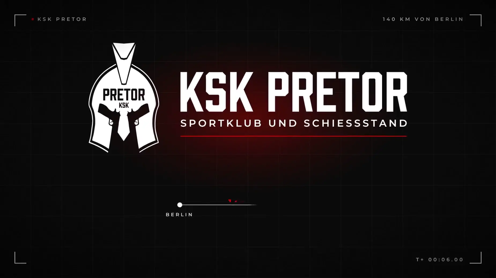
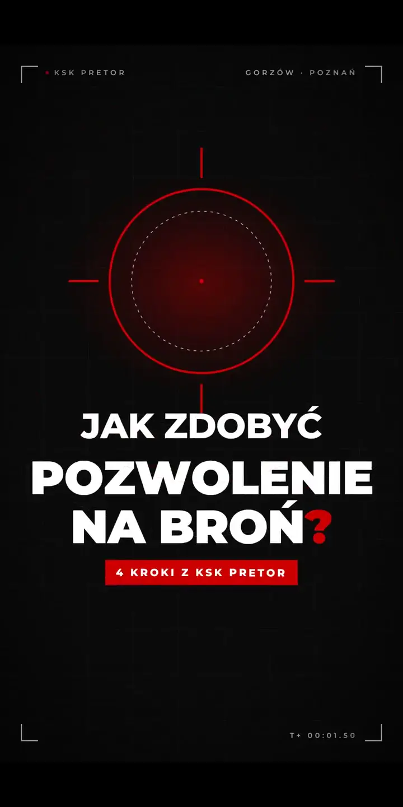
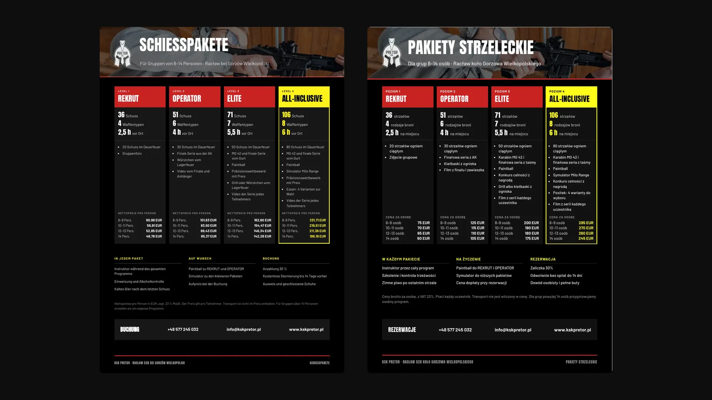
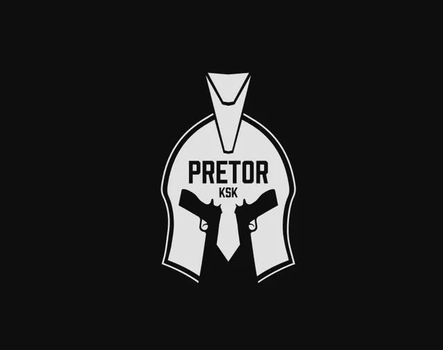
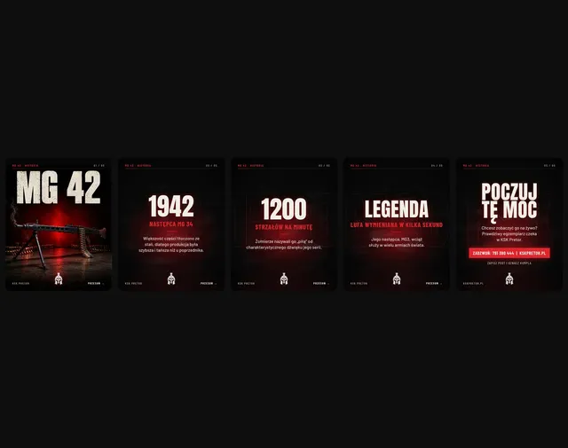
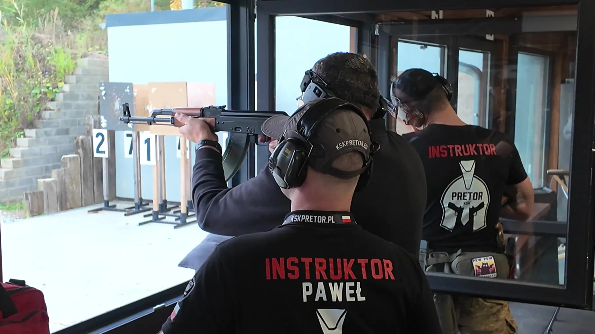
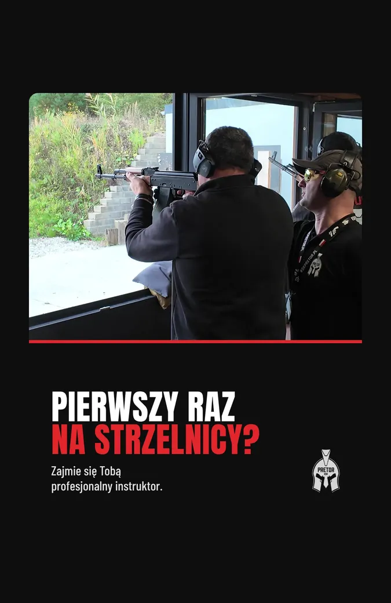
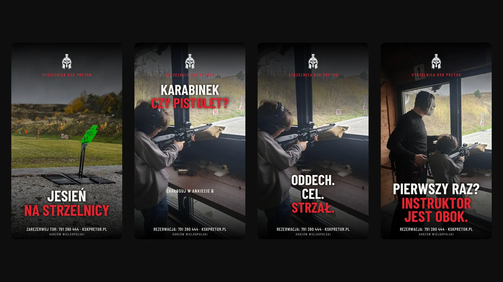
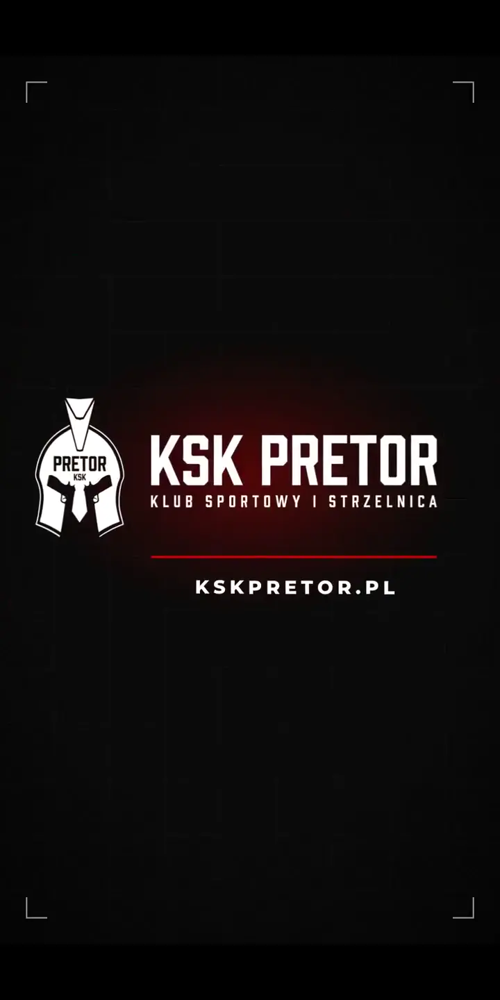
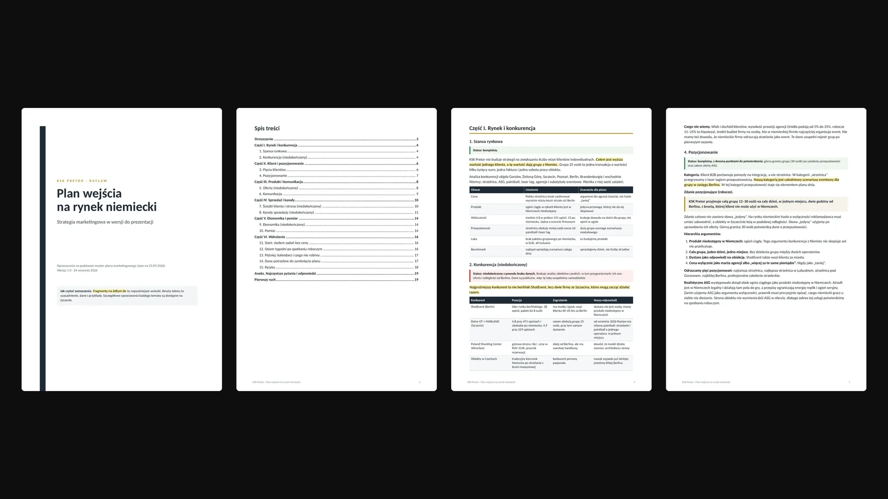
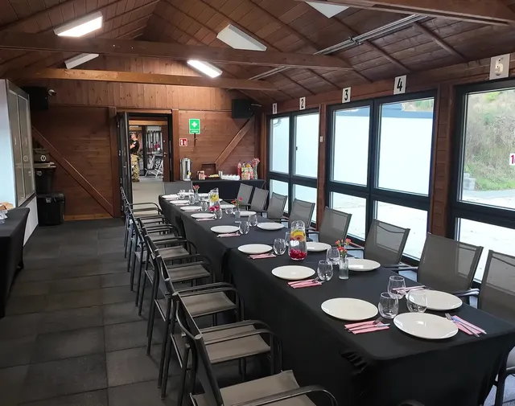
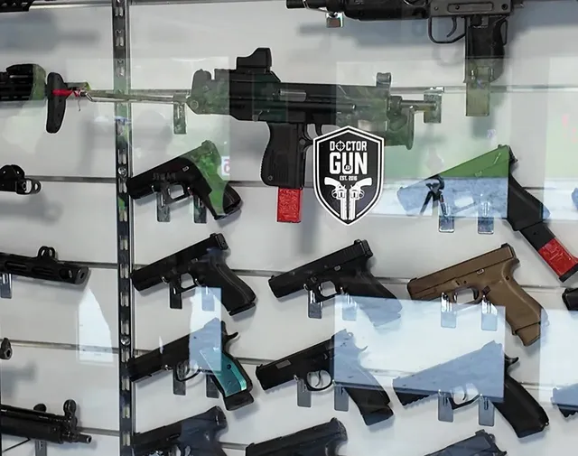
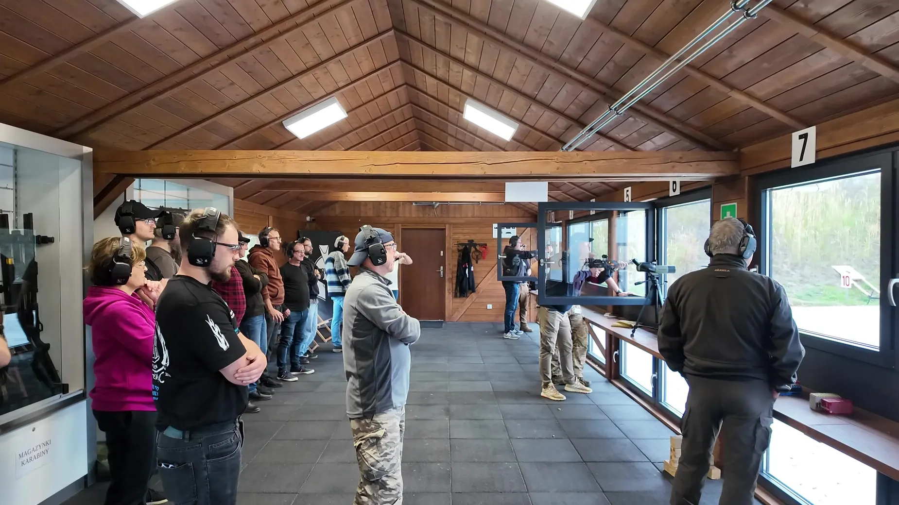
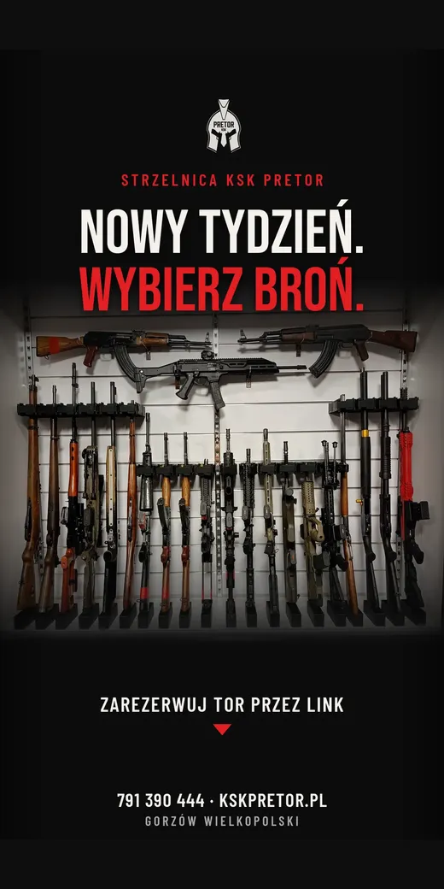